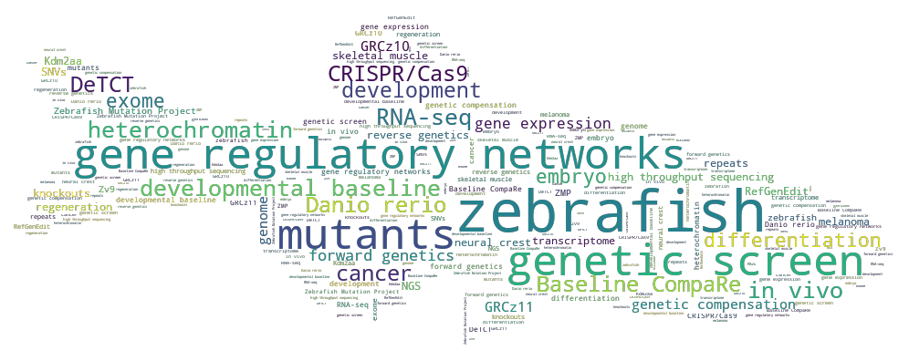

Busch Lab

The Busch Lab is based in London, UK and our research focusses on investigating in vivo gene regulatory responses to challenges such as genetic mutations, chromatin disruption and infection.
The Busch Lab is based in London, UK and our research focusses on investigating in vivo gene regulatory responses to challenges such as genetic mutations, chromatin disruption and infection.